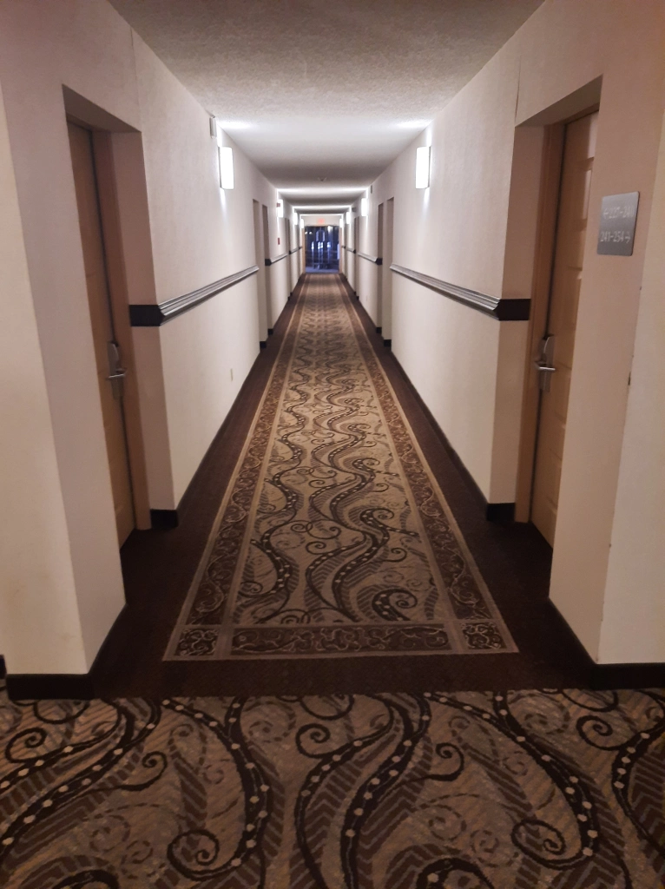
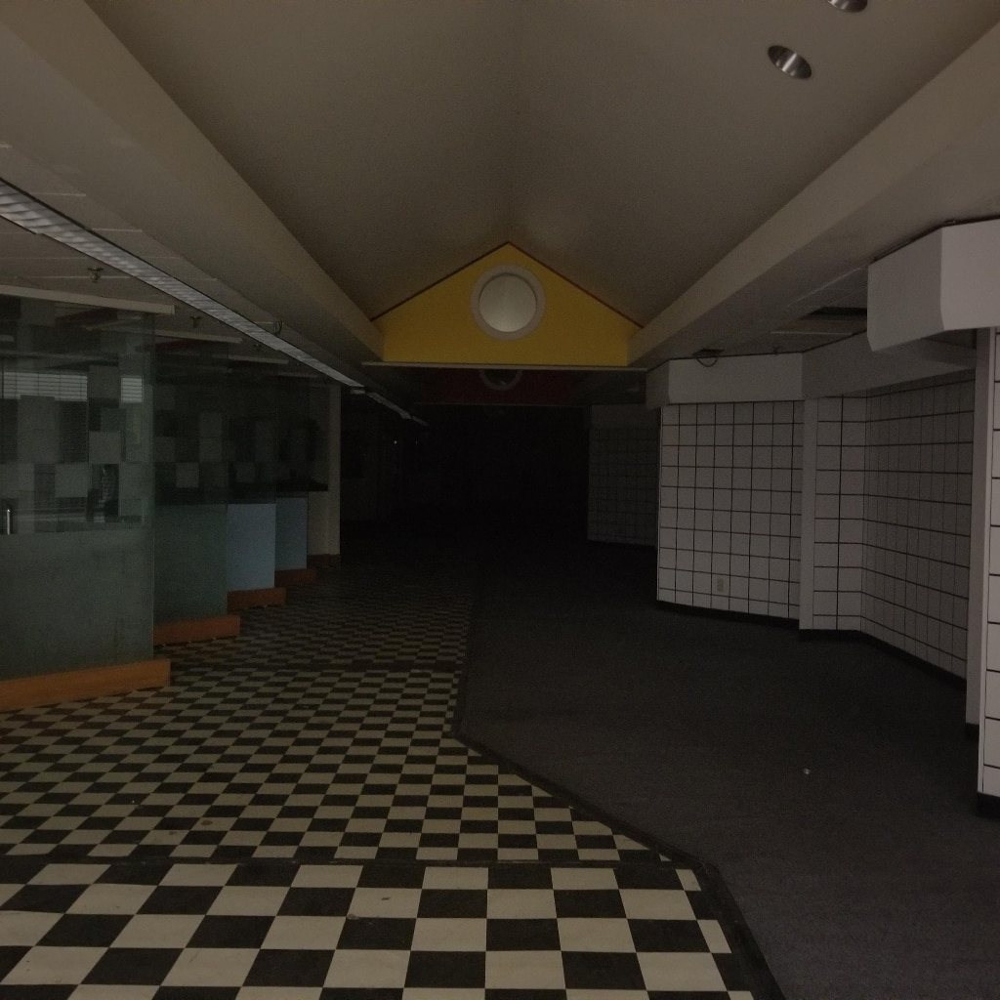
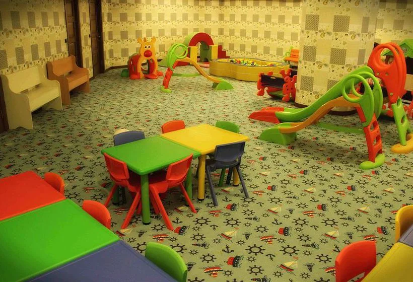
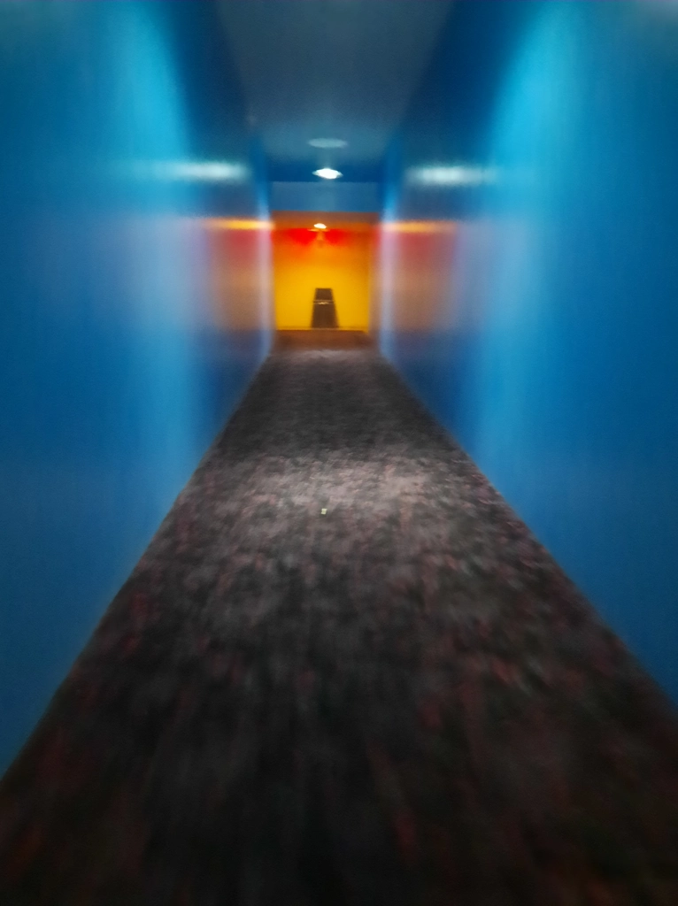

I’ve always found my interest a little bit embarrassing to be honest. Firstly, I sometimes get the impression that liminal spaces exist along the same vein as creepypastas did when I was younger. That is to say, amateur horror for children and teenagers. There likely is some truth to this, and I’ve seen first-hand some interpretations of liminal spaces, especially the backrooms, that personally just make me cringe. That’s not to say I have any really substantive critique of them, though. In fact, therein lies my other problem – substance. What is the substance of a liminal space? What message does it provide? I think my other source of embarrassment is one that I imagine other people experience with these “aesthetics”. An aesthetic is, almost by definition, devoid of substance. To be clear, that isn’t to say an aesthetic can’t be mobilized for some specific goal, though. Look at the political movement behind solar-punk, for example. Aesthetics can absolutely serve as a tool for a political, social or artistic movement, and liminal spaces are no different. My question is – what is the goal of liminal spaces? Or, more accurately, what are they used for?

Maybe they represent a philosophical shift in how the new generations view the world, or maybe they represent an existential fear of being alone forever. Perhaps our obsession is solely fueled by nostalgia for familiar places, and our goal is to selfishly retreat into the safety of childhood memories. Maybe, as I referenced earlier, they simply serve as shallow entertainment for those with weak ‘horror bones’ (no, I don’t care if you have a better term for this). This, however, begs the question – why? What is it about them that provokes this response, and what is it that makes this response “shallow” (if they are such a thing)?

As far as I can tell there are three primary elements to what I would consider a “proper” liminal image. The first is that the image has no people, and depicts an area, often a passageway or room, which evokes a general ’emptiness’. There are are liminal images that take place outside, but the same logic applies here as well. The second element is that the image evokes some kind of emotion, preferably a sense of familiarity, in the viewer. This is that sense of nostalgia I mentioned. You don’t have to literally remember a place exactly like it for this to work, it just as to be close enough where you feel like you could have been there. I’ve heard it said that some liminal images feel like someone took a photograph of a memory and showed it to you. This sort of leads into the third element – the image is somewhat off. It doesn’t have to paralyze you with fear, per se, but a sense that something isn’t quite what it seems contributes a lot. With these three elements we can begin to possibly peace together what it is exactly that makes them compelling. 
What is it about a familiar, off putting room with no people that interests us? Is it a desire to return to the past, away from the frustrations of the present? If so, why do we feel slightly off put by it? I would like to put forward my ever so subjective opinion, which I highly encourage you to take with a grain of salt, as it is meant to be only one interpretation among many – what if liminal images could serve as a kind of warning against nostalgia? See, imagine a liminal image, instead now filled with happy, early 2000s kids, having a good time and enjoying life blissfully. Now this would be a clear case of so-called nostlagia bait. A clear attempt to get us to reminisce about the good days. Instead, while a liminal image does provide nostalgia, it also tells us another story, one which says “not all is settled here.” We don’t necessarily want to visit this place. We may think of the past, but we do so with a heavy heart, perhaps lamenting the passage of time, or wishing the present were as ‘clean’ as the empty hallway or room. Nonetheless, we, as forward-thinking creatures, wish to separate ourselves from the sandpit of nostalgia. We don’t want to be here forever… although it couldn’t hurt to stay for a few more minutes, right? 
I think liminal images have the potential to evoke a kind of ‘cautious nostalgia’ in which we enjoy reliving a memory, but we’re troubled by the consequences of lurking for too long. It’s no surprise that most imaginings of the Backrooms involve some kind of monster lurking in the shadows. Perhaps what we are really afraid of is that we will be lost in the abyss of memory, forever dreaming of a time that will never come again…
- my picture :3
- Unknown. (n.d.). From Steam Workshop user “mr.mememaster42069”: “A wallpaper of a well know Liminal Space image. The real life location is in a mall called Washington Square located in Evansville, Indiana.” Retrieved February 9, 2025, from here
- Unknown. (n.d.). Posted on r/backrooms on June 5th, 2024 by user PhilosopherSweaty826. Retrieved February 9, 2025, from here
- also my picture =D